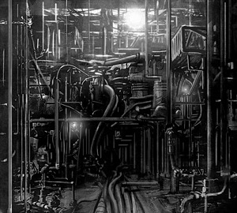

SCP-015

- Item nº:
- SCP-015
- Classe do objeto:
- Euclid
Procedimentos Especiais de Contenção:
O SCP-015 é impossível de mover e está contido no local. Deve-se manter o tempo todo um afastamento de pelo menos 2 m (6 pés) ao redor de toda a estrutura que contém o SCP-015, e nenhuma estrutura de qualquer tipo pode encostar na atual estrutura de contenção do SCP-015. A exploração é permitida, mas apenas em equipes de três (3) pessoas, com cordas de segurança completas e rastreamento por GPS. Qualquer saliência do SCP-015 deve ser imediatamente tampada e selada, com o novo ponto registrado e catalogado.
Nenhuma ação agressiva deve ser feita dentro do SCP-015. Nenhuma ferramenta manual ou elétrica é permitida em qualquer lugar dentro do SCP-015. Nenhum reparo ou manutenção deve ser feito em qualquer parte do SCP-015.
Descrição:
O SCP-015 é uma massa de canos, dutos, caldeiras e outros aparatos de encanamento que preenche por completo um armazém em ███████. Os canos parecem crescer quando não estão sob observação, tentando se conectar a estruturas próximas por meio de redes de esgoto e encanamentos subterrâneos. O SCP-015 contém, pela estimativa atual, mais de 190 quilômetros (120 milhas) de canos, com diâmetros que vão de 2,5 cm a mais de 1 m. Alguns canos parecem novos, enquanto outros estão enferrujados e vazando. Há relatos de canos feitos de osso, madeira, aço, cinza prensada, carne humana, vidro e granito. Nenhum cano de chumbo, PVC, cobre ou qualquer outro material tradicional para a fabricação de canos foi encontrado.
SCP-015 reage a ferramentas e agressão. Qualquer funcionário que aja com violência, carregue ferramentas ou tente danificar ou reparar o SCP-015 de qualquer forma provocará uma reação. Todos os canos próximos ao sujeito estouram, esguichando sobre ele por vários segundos, até que o fluxo cessa de repente. Há relatos de canos contendo óleo, mercúrio, ratos, uma espécie de inseto ainda não identificada, vidro moído, água do mar, entranhas e ferro fundido. Os canos continuarão estourando ao redor do sujeito até que ele morra ou recue.
O SCP-015 foi cortado até a estrutura atual depois de se conectar a 11 outras estruturas da região. Atualmente, 11 funcionários foram mortos e outros 20 continuam desaparecidos. Há relatos de batidas e gritos vindos de dentro do SCP-015.